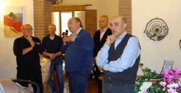

La notizia tardava ad arrivare, ma ben presto si è capito il
perchè.
L’ACSI di Padova settore ciclismo
stava riprendendo in mano una macchina da guerra che ha
sempre riscosso molto successo; il tempo di chiarire alcuni
aspetti, legati ad un calendario sempre più fitto, parlare
con molti sponsor che si erano fatti avanti, organizzare i
molti aspetti connessi, ed ecco che verso metà novembre gli
appassionati bikers veneti avevano le prime novità dai
comunicati stampa ufficiali, che li rassicuravano sulla
stagione agonistica 2014.
Nuovo sito, nuova pagina facebook (problemi tecnici oltre ad
una rinnovata veste grafica, ed un marchio registrato che
impone di essere “esibito”) ed ovviamente nuove gare
seguivano la convocazione delle associazioni sportive da
parte dell’Ente ACSI, svolta per capire chi avrebbe
voluto partecipare con proprie gare, ed appunto nuove
location collinari e non.

Per la gara del Castello di Este: sebbene
in un primo momento (come avevano dichiarato Renzo Zordan e
Giorgio Roman alla cerimonia di conclusione della C.C.E.
2013 al PalaEste) per il 2014 la Coppa Colli in zona si
pensava sarebbe transitata solo a Baone, a grande richiesta
e con soddisfazione del Presidentissimo ACSI Bepi Andreose –
che sta curando in ogni dettaglio il ricco calendario –
annunciamo ufficialmente la riproposizione della particolare
sfida di cross country dentro le mura e lungo le collinette
di Byron e Shelley.
La richiesta già ci giungeva – a sorpresa, dobbiamo
confessare – all’annuale pranzo sociale a metà
novembre, da parte dell’assessore allo sport, sig. Brugin
(eccovi la foto del momento, con Renzo, Lorenzo, e Guido
Barbato). Gli sforzi nel 2013 sono stati enormi, ve
l’assicuriamo: l’olio di gomito di decine di
volontari si era sprecato. Ma nonostante le difficoltà (ci
sono i lavori di sistemazione delle mura e del parcheggio
nell’area di gara), e dopo una consultazione con
l’assessore ai lavori pubblici sig. Agujari Stoppa, il team
si trovava a dover decidere in merito ad un “ripescaggio” di
un evento sempre di successo, ma che tra mille fatiche ed
alcuni possibili ostacoli (come l’eventuale sistemazione del
vallo lungo le mira carraresi) si rendeva ancor più
arduo.
Quindi, insieme al conforto dell’Amministrazione
comunale, alla capacità organizzativa del sodalizio
giallorosso, al sostegno imprescindibile degli sponsor, e
alla buona volontà di associati riproporremo una gara unica,
in notturna e nella location più romantica e storicamente
importante dei Colli, nella Città che orgogliosamente
rappresentiamo e che è sede dello stesso Parco regionale.
Gara che comunque seguirà di circa un mese gli sforzi
profusi dal team Estebike nell’organizzazione e gestione del
percorso dell’Atestina Superbike
(8 giugno 2014), con un Gianluca Barbieri nella doppia veste
di associato ed organizzatore, oltre che – per la notturna –
addetto al fondamentale impianto di illuminazione.
Queste le “bombe” di dicembre: ma mancano ancora
20 giorni a Capodanno…
Per restare quotidianamente aggiornati, vi consigliamo anche
la nostra pagina Facebook!
vedi anche
http://www.pianetamountainbike.it/


{kind=link}